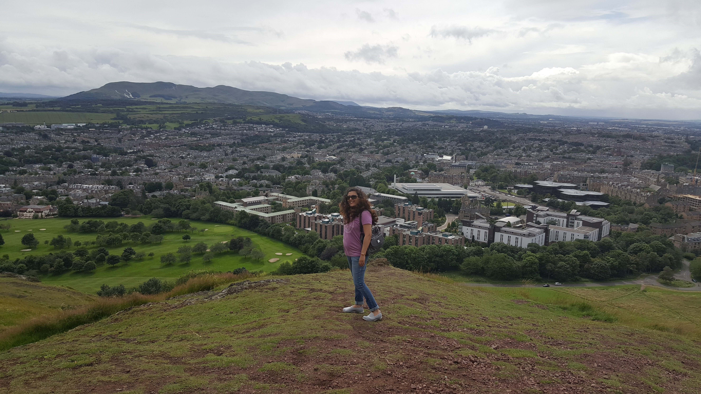

About
Edinburgh is Scotland’s capital city, renowned for its heritage, culture and festivals
Climbing Arthur's Seat was exciting. Arthur's Seat is the main peak of the group of hills in Edinburgh, Scotland which form most of Holyrood Park, described by Robert Louis Stevenson as "a hill for magnitude, a mountain in virtue of its bold design".
